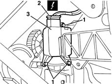

5040D96 Air conditioning upper right air distribution flap control MOTOR (DEFROST) - R.R.
- Path
- Procedures > 50 AUXILIARY UNITS > 5040 AIR CONDITIONING CASING AND COMPONENTS > 5040D air conditioner controls > 5040D96 Air conditioning upper right air distribution flap control MOTOR (DEFROST) - R.R.
- Kind
- repair procedure (removal / refitting; the operation number is the code)
- Applies to
- all engines; all production periods
- Interactive page
- https://sloeber94.github.io/elrnDB-lYpsln/en/#/2429340
Applies to: all engines; all production periods
 Removing
Removing
 Refitting
Refitting7040A18 glove compartment on facia - arrange
1. Unscrew the motor retaining bolt.
2. Disconnect the motor electrical connection.
 | Name | Connector |
|---|---|---|
2 | Right air distribution actuator |
3. Remove the motor releasign the intake.

Applies to: all engines; all production periods
Refitting
RemovingCheck that the motor is undamaged.
Position the motor engaging the intake in the compulsory position.
Tighten the bolts fixing the motor.
Check the motor electrical connection.
7040A18 glove compartment on facia - arrange
Carry out the system zeroing procedure using the Examiner.